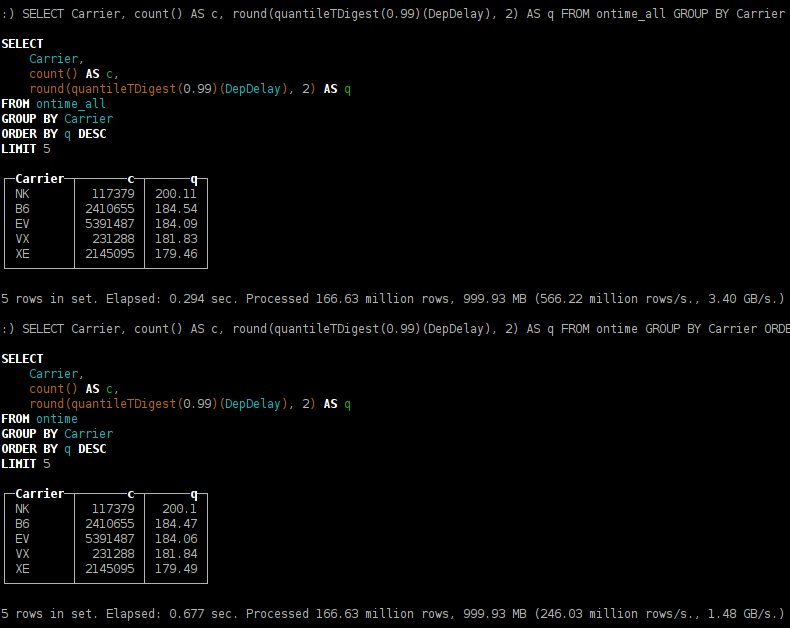

翻译自 clickhouse 官方入门教程第二节：https://clickhouse.yandex/tutorial.html
将 clickhouse 部署到集群
ClickHouse 集群是一个 homogenous 集群. 设置步骤是:
- 在集群内所有机器上安装 ClickHouse 服务端
- 在配置文件中设置集群相关的配置
- 在集群内每台机器上创建本地表
- 创建分布式表（Distributed table）
在 ClickHouse 集群中分布式表事实上是一种关联到每台机器本地表的 view。对分布式表执行查询将使用集群中所有分片（译者注：一个分片即为集群中的一台机器）的资源。可以为多个集群指定配置，并创建多个分布式表以提供对不同集群的 view。
下面的配置是一个有三个分片的集群，每个分片将数据保存到一个副本中（译者注：数据只有一份，没有副本）：
1 | <remote_servers> |
创建本地表（译者注：待确定是否在所有分片上都创建本地表）：
1 | CREATE TABLE ontime_local (...) ENGINE = MergeTree(FlightDate, (Year, FlightDate), 8192); |
创建分布式表，提供集群中本地表的 view：
1 | CREATE TABLE ontime_all AS ontime_local |
可以在集群的每个机器上都创建间一个分布式表。这将允许在集群中的任何一个机器上都能执行分布式查询。除了分布式表还可以使用 remote 表函数。
接下来在分布式表上执行 INSERT SELECT，以将该表扩展到多个服务器。
1 | INSERT INTO ontime_all SELECT * FROM ontime; |
值得注意的是，上面给出的方法不适用于大型表的分片。
可以预期，在3台服务器（而不是1台）上启动繁重的查询，执行速度提高了N倍。

你可能已经注意到，分位数计算略有不同。发生这种情况是由于 t-digest 算法的实现是不确定的 – 它取决于数据处理的顺序。
在这个例子中，我们使用了一个包含 3 个分片的集群，每个分片包含一个副本。
为了在生产环境中提供弹性，我们建议每个分片应包含在多个数据中心之间分布的 2-3 个副本。请注意，ClickHouse 支持无限数量的副本。
配置一个包含三个副本的分片集群
1 | <remote_servers> |
要启用多副本功能，ZooKeeper 是必需的。 ClickHouse 将负责所有副本上的数据一致性，并在失败后自动运行还原过程。建议将 ZooKeeper 群集部署到单独的服务器。
在某些简单情况下 ZooKeeper 不是必需的，比如你可以通过在应用程序中编码，将数据写入所有副本中来复制数据。但不建议使用此方法，在这种情况下，应由应用程序负责保证所有副本上数据的一致性而不是 ClickHouse。
在配置文件中设置 ZooKeeper：
1 | <zookeeper-servers> |
另外，我们需要设置宏以识别分片和副本，这将在创建表时使用：
1 | <macros> |
如果在创建新的副本时没有已存在的副本，则将实例化一个新的第一个副本。如果已经存在副本，则新副本将从现有副本中克隆数据。你可以选择先创建所有副本表，然后再向其中插入数据。也可以选择是在数据插入之后或期间创建一些副本并添加其他副本。
1 | CREATE TABLE ontime_replica (...) |
在这里，我们使用 ReplicatedMergeTree 表类型。 在参数中，我们指定包含分片和副本标识符的 ZooKeeper 路径。
1 | INSERT INTO ontime_replica SELECT * FROM ontime; |
复制以多主模式运行。数据可以加载到任何副本中，它将自动与其他副本同步。同步是异步的，因此在给定的时间点上，并非所有副本都包含最近插入的数据。为了允许数据插入，至少应有一个副本。其他副本在变为活动状态后，将同步数据并修复一致性。请注意，这种方案允许最近插入的数据丢失的可能性。